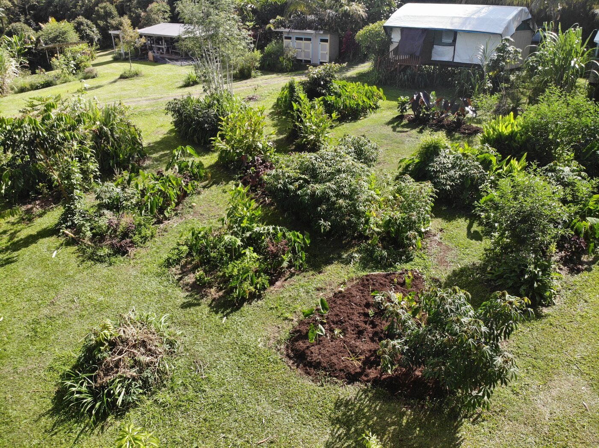
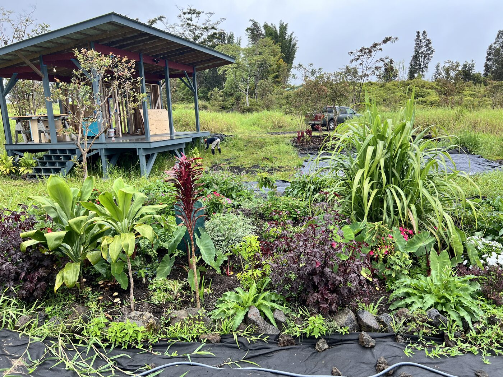
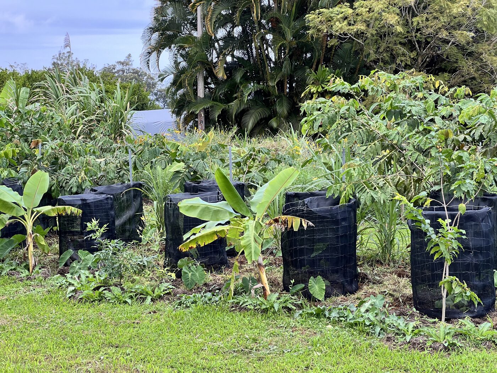

A half-acre property transformed from overgrown brush into a thriving, productive edible landscape. Featuring dozens of fruit trees and tropical understory plantings, this property is fully sustainable with no pesticides or fertilizers used.
View Project
A thoughtfully designed dome garden combining native Hawaiian plants with productive fruit trees and medicinal herbs. Built in the aftermath of a construction project after soil had been moved and piled up, this garden brought new life to disturbed ground.
View Project
A scalable agroforestry design built for farm production. This system features ʻawa as its primary crop alongside sugar cane, bananas, kalo, ice cream bean, kukui, and rare fruit trees — demonstrating how diversified tropical agriculture can be both productive and ecologically sound.
View ProjectEvery property has unique potential. Let's discover what yours can become.
Start Your Project